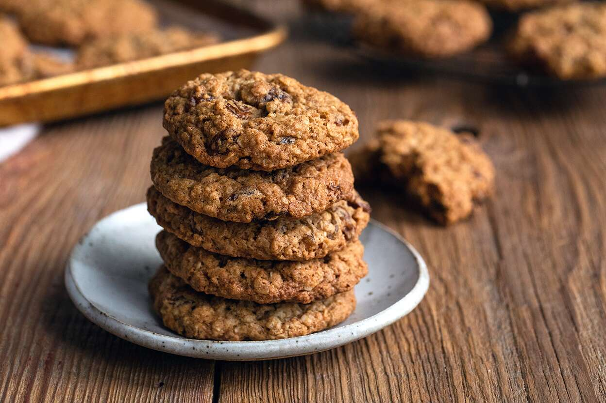
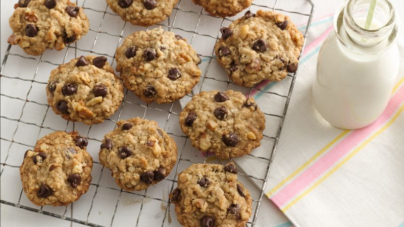

Menu
Page 1
Page 2
Page 3
Page 4
Page 5
No-Bake Oatmeal Cookies
Ingrendients
Weight
sugar
2 c.
cocoa powder
1/4 c.
butter
2 sticks
milk
3/4 c.
peanut butter
1c.
oats
5c.


Prep time:
10 minutes
Total time:
2 hrs 30 minutes
Instructions
Step1
In a medium saucepan over medium heat, melt together sugar, cocoa powder, butter, and milk.
Bring mixture to a boil and let boil 1 minute.
Step 2
Remove from heat and stir in peanut butter and salt, then stir in oats.
Step3
Drop tablespoons of mixture onto parchment paper and let set until cooled and hardened, 2 hours.
Review (1-5):
What do you think about this recepies? 💗
Enter your comments.